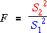
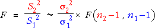
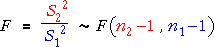

Ratio of variances
We have now seen that sample variances have distributions that are scaled chi-squared distributions

Analysis of variance is a powerful and widely used statistical technique in which pairs of such variances are compared. The ratio of two such variances is called an F ratio.

F distribution
Consider two sample variances that are calculated from random samples from different normal populations. The F ratio then has a standard distribution called an F distribution. The shape of this distribution depends on the sample sizes of the two groups — more generally on the degrees of freedom of the two variance estimates.
Allowing for the possibility that the two normal populations have different standard deviations, the F distribution is scaled by their ratio,

However if the two groups really have the same population standard deviations, then this simplifies and the distribution does not involve any unknown parameters:

Shape of the F distribution
The diagram below shows the shape of the F distribution.
Use the sliders to adjust the degrees of freedom for the distribution (one fewer than the sample sizes in the two groups for the F variance-ratio statistic). Observe that:
In practice, we usually only want to compare variances when both sample sizes are reasonably high.
Simulation
The following diagram shows samples of size n1 = 7 and n2 = 20 from normal populations that both have the same standard deviation (σ1 = σ2 = 1.3).
Click Accumulate then take several samples from the two groups. Observe that the variability of the F ratio matches the theoretical F distribution with 19 and 6 degrees of freedom.